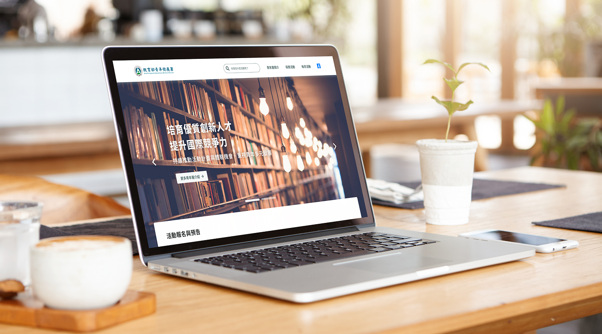
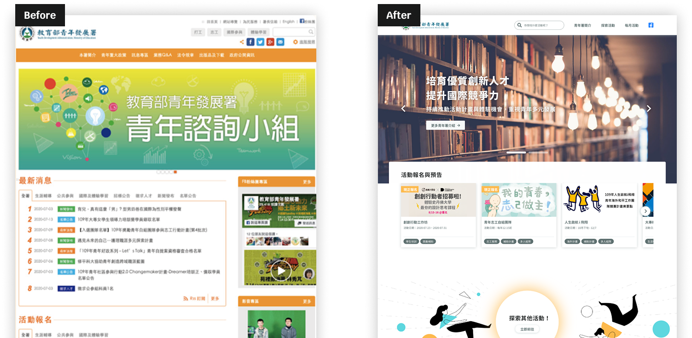
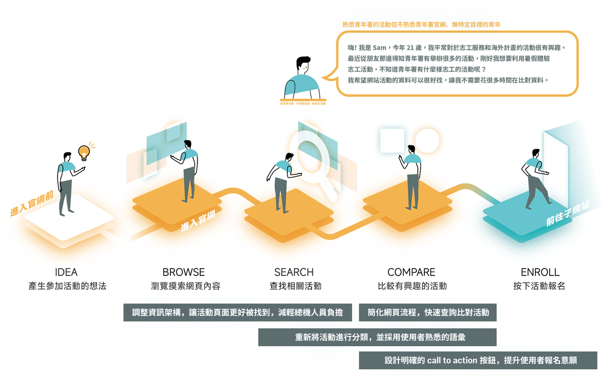
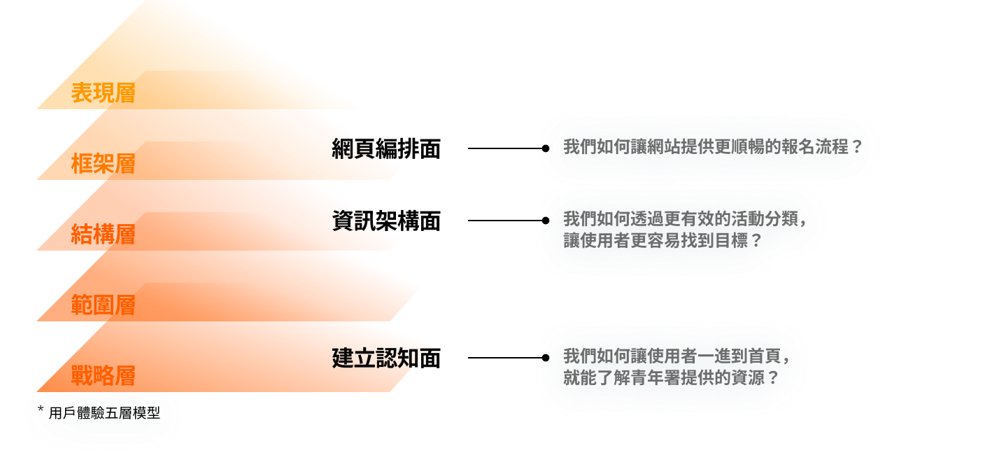
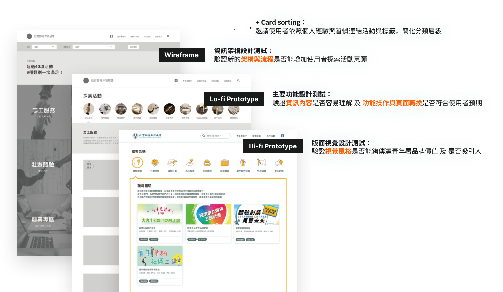
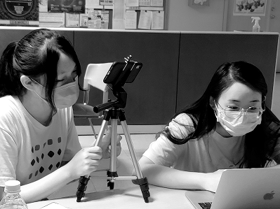
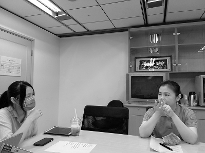

針對青年署「拓展青年使用族群、提高探索活動意願」的改版需求，透過使用者研究與迭代設計，有效提升 SUS 易用性與整體使用滿意度。
For YDA's goal of expanding youth users and increasing activity participation, we conducted user research and iterative design — achieving significant improvements in usability and overall satisfaction.

教育部青年署希望「拓展青年使用族群、提高探索活動意願」，但現有官網的版面編排反而降低了青年的點擊意願與活動報名率。透過 9 位 18–25 歲青年的網站任務測試，以及 1 位青年署總機人員的訪談，我們識別出三個核心問題：
YDA's goal was to expand its youth user base and increase activity participation — but the existing website's layout was actually driving youth away, reducing click rates and activity registrations. Through task testing with 9 users aged 18–25 and interviews with a YDA staff member, we identified three core problems:
青年以為官網是政令宣導網站，不會主動造訪，直接去找活動的主題網站。
Youth assumed the site was a government bulletin board and went directly to activity-specific sites instead.
活動分類標籤命名太過相似，使用者不知道自己想找的活動在哪個分類下。
Category labels were too similar to each other; users couldn't identify which category their target activity fell under.
報名連結埋在公文字海中，學生只好打電話給總機詢問如何報名。
Registration links were buried in document text, forcing students to call the YDA helpline for assistance.

▲ 改版前後對比——從條列式政令宣導風格，到以活動卡片為核心的年輕化設計
▲ Before and after — from a bulletin-board layout to an activity-card-centered youthful design
首先透過使用者旅程地圖釐清使用者在哪個階段遇到阻礙，再以 How Might We 框架定義設計機會：
We first mapped the user journey to identify where friction occurred, then framed design opportunities using How Might We questions:

▲ 使用者旅程地圖——從產生參加活動的想法，到最終完成報名，識別各階段的痛點與設計機會
▲ Customer journey map — from idea to enrollment, identifying pain points and design opportunities at each stage

▲ 以五層設計架構（戰略層到表現層）對應三個 HMW，確保設計決策有明確的問題根據
▲ Five-layer design framework (strategy to surface) mapped to three HMWs
我們如何讓使用者一進到首頁，就能了解青年署提供的資源？
How might we ensure users understand YDA's resources and value as soon as they land on the homepage?
我們如何透過更有效的活動分類，讓使用者更容易找到目標？
How might we make it easier for users to find their target activities through more effective categorization?
我們如何提供更順暢的網站報名流程？
How might we provide a smoother, more intuitive activity registration experience?

▲ 設計迭代流程——從卡片分類、線框稿到 Lo-fi／Hi-fi 原型，每輪測試後持續收斂設計方向
▲ Iterative design process — from card sorting and wireframes to Lo-fi/Hi-fi prototypes, refining direction after each testing round


▲ 易用性測試現場——邀請 18–25 歲青年執行網站任務測試，記錄操作過程與反應
▲ Usability testing sessions — youth aged 18–25 completing website task tests while we observed and recorded their interactions
重新調整活動分類、建立年輕形象、提供流暢探索與報名流程後，新版官網有效提升了易用性與使用滿意度：
After revising categorization, establishing a youthful image, and creating a streamlined exploration and registration experience, the redesigned website achieved measurable improvements:
「設計不只是讓東西『好看』，而是讓使用者在對的時間找到對的資訊。」
"Design isn't about making things look good — it's about helping users find the right information at the right moment."
這個專案是我第一次在真實政府服務的情境下做 UX 設計。從訪談到任務測試，我學到了如何在有真實使用者、真實利害關係人的環境下迭代設計——不是追求完美的原型，而是在每一輪測試中找到最關鍵的改善點。
This was my first UX design project in a real government service context. From interviews to task testing, I learned how to iterate design with real users and real stakeholders — not pursuing a perfect prototype, but finding the most critical improvement in each testing round.
這個經驗也讓我意識到「資訊架構」的重要性不亞於視覺設計——使用者在哪裡迷路，往往不是因為設計不好看，而是因為分類邏輯與他們的預期不符。
This experience also taught me that information architecture matters as much as visual design — users get lost not because the design looks bad, but because the categorization logic doesn't match their mental model.